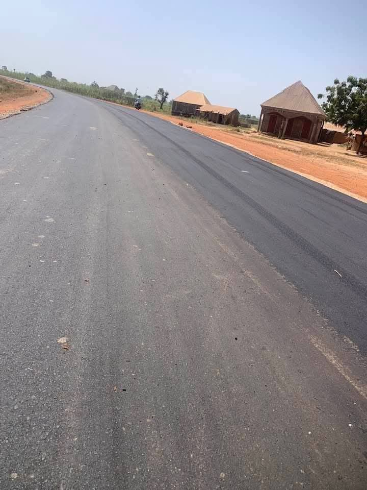
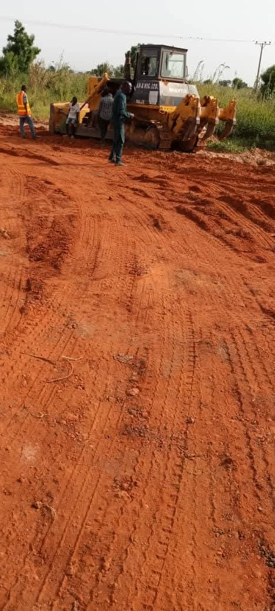
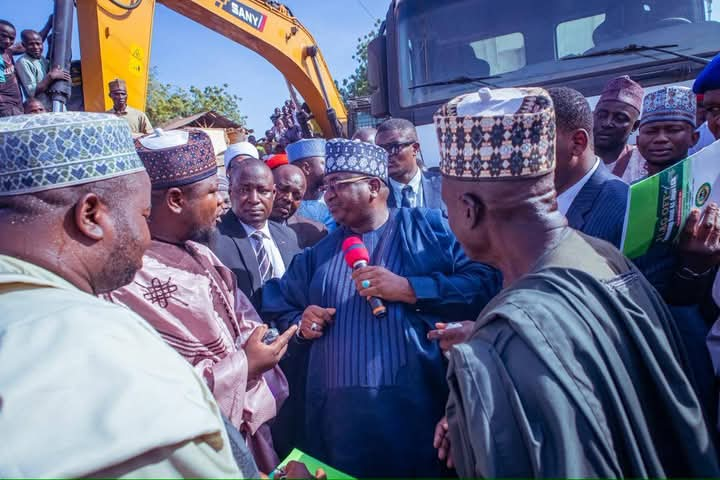

Road Networks, Urban Mobility & Rural Accessibility
Road infrastructure has constituted the backbone of Governor Nasir Idris’ development agenda, emphasizing both urban connectivity and rural accessibility. Over 300 kilometres of rural highways have been identified, planned, and commenced across Kebbi State as part of a comprehensive rural transformation strategy. These include flagship routes such as the 6.5‑kilometre Malisa–Kurya–Maruda road in Gwandu, the Rini Junction–Gidan Jodi–Garu Town road in Augie, and multiple feeder routes that enhance connectivity between villages, farms, and local markets. 1
In the urban context, major rehabilitation and construction works were executed in Birnin Kebbi and Yauri, upgrading township roads and improving drainage systems. In the capital city, full rehabilitation and modern redesign of metropolitan roads, including asphalt overlays and solar street lighting, have improved traffic flow, reduced travel times, and enhanced public safety. Investments in dual carriageways and township streets have also positioned Birnin Kebbi as a modern and navigable metropolis. 2
The overarching aim of these road programs is to reduce post‑harvest losses for farmers, facilitate easier movement of goods and people, and attract commercial activity to previously isolated parts of the state. By linking remote communities to urban centers, these projects are fostering economic integration, boosting local enterprise, and expanding access to services such as healthcare and education that depend on dependable road connectivity.



Healthcare Infrastructure & Hospital Modernization
Healthcare facilities across Kebbi State have experienced notable upgrades and expansions, reflecting a commitment to bolstering medical infrastructure for improved public health outcomes. A prominent example is the N1 billion rehabilitation contract awarded for the Argungu General Hospital, covering both structural refurbishment and the procurement of modern medical equipment to enhance service delivery. 3
Additional renovation and modernization projects extend to General Hospitals in Augie, Arewa, and Bunza, together with improvements at specialized centers such as Fati Lami Maternity Hospital. These enhancements not only upgrade buildings but also focus on equipping hospitals with contemporary tools, diagnostic machines, and emergency care facilities that bring critical services closer to residents. 4
Beyond hospital infrastructure, strategic investments have prioritized a systematic approach to healthcare delivery, ensuring that facilities within local government headquarters are operational and capable of addressing both routine and emergency medical needs. These projects are grounded in the belief that quality medical services are essential for human capital investment and long‑term social wellbeing.


Bridges, Drainage Systems & Urban Renewal
Infrastructure development under Governor Nasir Idris has also encompassed bridges, drainage networks, and urban enhancement projects designed to improve resilience to flooding, expand mobility, and support commercial activities. Bridge repair works and new constructions have been undertaken on multiple arterial routes, such as the Bunza–Dakingari Road bridge projects, improving both vehicular safety and freight movement. 5
In Birnin Kebbi, major drainage projects have been approved and enacted, including the construction of access roads integrated with robust drainage systems in densely populated areas like Badariya. Investments exceeding N2.1 billion have gone into roads and drainage works that target perennial water‑logging issues, create safer environments for pedestrians, and enhance urban aesthetics. 6
Urban renewal has extended beyond functional infrastructure to encompass revitalization of key public spaces, including the ultra‑modern motor park and enhanced street lighting across central districts. These improvements are engineered to make urban centers safer and more inviting for residents, business owners, and visitors alike — reinforcing the principle that good infrastructure is a prerequisite for vibrant economic life.